6. Oriented drill cores
Tobias Stephan
2025-08-29
Source:vignettes/6_Oriented_Drill_Cores.Rmd
6_Oriented_Drill_Cores.RmdThe function drillcore_orientation() calculates the
orientation of a plane or line from internal core angles
(alpha, beta, and
gamma) of oriented drill cores.
azi is the azimuth of drill core axis orientation (in
degrees, measured clockwise from North), and inc is the
inclination of drill core axis (in degrees).
azi <- 225
inc <- -45Note that egative values for the inclination indicate downward direction
alpha and beta are the internal core angles
alpha and beta, respectively, measured in degrees.
drillcore_orientation(azi, inc, alpha = 60, beta = 320)
#> Plane object (n = 1):
#> dip_direction dip
#> 25.00392 70.02959The function returns a spherical objects. Since only alpha and beta
angles are specified, the output is a "plane" object.
For several alpha and beta angles:
planes_AB <- drillcore_orientation(azi, inc, alpha = c(60, 45), beta = c(320, 220))The orientations can be plotted in a equal area (lower hemisphere) projection:
# initialize stereonet:
stereoplot()
# plot the core axis *azi and inc angles)
stereo_point(Line(azi, -inc), lab = "core-axis")
# plot the plane orientations as poles...
stereo_point(planes_AB, lab = c("A", "B"), col = c("#B63679FF", "#FB8861FF"))
# ... and as great circles
stereo_greatcircle(planes_AB, col = c("#B63679FF", "#FB8861FF"))